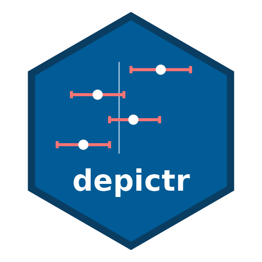

depictr: A Unified Toolkit for Visualising Statistical Models and Data
Source:R/depictr-package.R
depictr-package.Rddepictr provides a consistent set of plots that span the whole analysis
workflow, from a first look at the data, through model estimates and
predictions, to diagnostics, uncertainty and reporting. Every plotting
function returns a ggplot2::ggplot object (or a 'patchwork' for composite
panels), so results can be customised with the usual + syntax, and every
plot shares one theme, one colourblind-aware palette and one set of label
conventions.
Exploring data
explore_distribution(): histograms / densities of one variable.explore_categorical(): bar charts of a categorical variable.explore_bivariate(): a suitable plot for any pair of variables.explore_pairs(): a scatter-plot matrix.correlation_heatmap(): correlations as a heatmap.missingness_map(): a map of missing values.outlier_plot(): box / violin plots flagging outliers.raincloud_plot(): half-violin, box and raw points together.group_comparison_plot(): group means with confidence intervals.scatter_trend(): scatter plot with a fitted trend.summary_table(): a "Table 1" style descriptive summary.
Multivariate and survival
pca_plot(): principal-component biplot.scree_plot(): variance explained by each component.cluster_plot(): k-means clusters on principal-component axes.dendrogram_plot(): hierarchical-clustering dendrogram.survival_plot(): Kaplan-Meier survival curves.
Time series
timeseries_plot(): one or more series over time.acf_plot(): autocorrelation / partial autocorrelation.decompose_plot(): trend / seasonal / remainder decomposition.
Model estimates and inference
tidy_estimates(): the shared tidy estimate table.coefficient_plot(): forest / coefficient plot.compare_models(): estimates from several models, side by side.frequentist_bayesian_plot(): frequentist vs. Bayesian estimates.effects_plot(): predicted values for one predictor.interaction_plot(): predicted values across two predictors.random_effects_plot(): caterpillar plot of random effects.optimizer_fixef_plot(): fixed effects across optimisers.model_fit_table(): goodness-of-fit statistics across models.
Diagnostics and classification
residual_diagnostics_plot(): residual-diagnostic panel.influence_plot(): influence and leverage.qq_plot(): normal quantile-quantile plot.vif_plot(): multicollinearity (variance inflation factors).roc_curve_plot(): ROC curve(s) with AUC.pr_curve_plot(): precision-recall curve with average precision.gain_plot(): cumulative gains chart.lift_plot(): cumulative lift chart.calibration_plot(): calibration of predicted probabilities.confusion_matrix_plot(): confusion matrix as a heatmap.
Uncertainty and power
posterior_plot(): posterior intervals and densities.power_curve_plot(): power against sample size.
Theming and reporting
theme_depictr(): the shared theme.depictr_palette(),scale_colour_depictr(): the shared palette.palette_preview(): preview the palettes.format_terms(): tidy raw coefficient names for display.model_report(): a one-figure overview of a fitted model.arrange_plots(): compose plots with a shared legend and title.save_plot(): save a plot with publication-ready defaults.
Bundled data
lexical_decision, wellbeing_survey and crop_yield are reproducibly simulated datasets used throughout the examples and vignettes.
References
Wickham H (2016). ggplot2: Elegant Graphics for Data Analysis, 2nd edition. Springer, Cham, Switzerland. ISBN 978-3-319-24277-4. doi:10.1007/978-3-319-24277-4 .